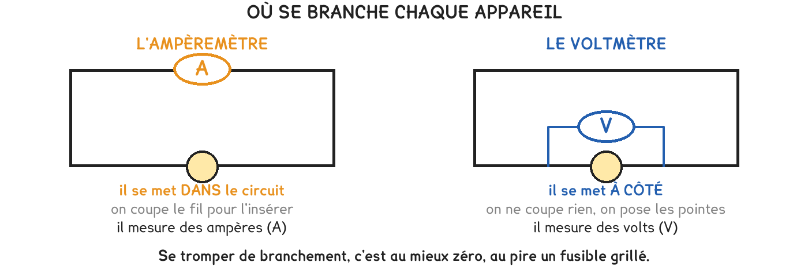

CAP Électricien · 1re année
En série, c'est la tension qui se partage ; en dérivation, c'est le courant. Deux phrases, et la moitié des exercices de l'année.
2 exercices · 6 items d'entraînement · 2 figures
Savoirs travaillés

Les deux appareils ne mesurent pas la même chose, et ils ne se branchent donc pas de la même façon. L’ampèremètre compte ce qui passe : il faut que tout passe par lui. Le voltmètre mesure un écart entre deux points : il se pose à cheval.
L’ampèremètre se branche dans le circuit, en ampères : il faut couper le fil pour l’y mettre. Le voltmètre se branche à côté, en volts : on le pose sur les deux bornes sans rien couper.
En série, le courant est le même partout et la tension se partage. Il n’y a qu’un chemin : ce qui entre quelque part ressort ailleurs, sans se diviser.
En dérivation, c’est l’inverse : la tension est la même sur chaque branche, et c’est le courant qui se partage. Chaque branche prélève ce dont elle a besoin.
En série, la tension se partage entre les appareils, et le courant est le même partout. En dérivation, c’est le courant qui se partage, et la tension est la même sur chaque branche.
Série · CN
Série · CN
Exercice · CN
Une torche contient trois piles de 1,5 V placées bout à bout. Quelle tension arrive sur l’ampoule ?
Exercice · CN
Dans une torche à deux piles, l’une est neuve — 1,5 V — et l’autre est usée, 1,2 V. Quelle tension arrive sur l’ampoule ?
Mesurer une intensité sans couper le circuit. Un ampèremètre posé comme un voltmètre ne mesure rien de bon — et il se met en danger. On coupe, on intercale, on referme.
Devant une mesure, deux questions dans l’ordre : quel montage, puis quelle grandeur. La règle à appliquer découle des deux.
Ce site rappelle la méthode. Aucun corrigé, rien n'est noté.